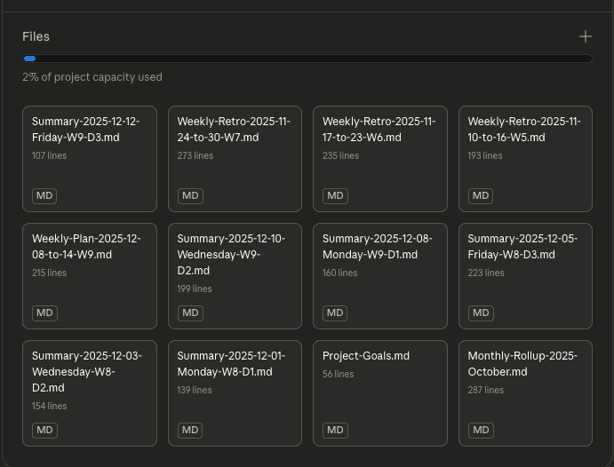

Daily logging meets eval-driven development
Zach Morek
Jan 9, 2025
Claude-as-coach is effective. But platform lock-in limits what we can do.
Platform lock-in:
Manual processes:
Portability:
What if we wanted the same workflow with any tool-calling model?
Build a model-agnostic daily logging and reflection assistant.
Prompt-native knowledge management. Multishot learning through context curation.
What I wanted:
What I built: Microagent (1546 lines) + eval_runner (836 lines)
Claude-as-coach: Skills + Project Documents
Great inference quality/$ but friction to share with others.
Claude.ai’s project feature: persistent documents across conversations.
Key insight: Small files are always in context (no RAG needed at this scale) - “context packing” - This is the pattern microagent replicates locally.

| Primitive | What it is | How I use it |
|---|---|---|
| Conversation | Permanent chat, context not retained | Daily check-ins |
| Artifact | Generated content | Summaries, retros |
| File | Project document | Persistent context |
| Skill | On-demand instructions (.zip) | Structured workflows, “progressive disclosure” functions |
| Memory | 30 slots (200 chars each), agent/UI editable | passively using, but finding it lacking |
| Instructions | System prompt | (skipped to simplify, we already have a lot of files that give general instructions) |
The workflow uses conversations → artifacts → files.
| Aspect | Claude-as-Coach | Microagent |
|---|---|---|
| Platform | Claude.ai (web) | Local CLI |
| Code required | None | ~1500 lines Python |
| Context loading | All files always loaded | Flexible (can eval read-file vs packed-context) |
| Skill invocation | Project knowledge | find_skill tool |
| Persistence | Artifacts (manual) | write_file tool |
| Token budget | ~60-70k pre-loaded | ~500 base + on demand |
They can be used to keep long, semi-frequently used instructions from chewing up context window.
---
name: daily-summary-base
description: Use when user says "daily summary"
---
# Daily Summary Generator
## Process
1. Verify current date (tool call)
2. Ask which date to summarize
3. Generate structured markdown...Claude matches triggers → loads skill → executes process
Replicated in microagent with find_skill
tool.
Sun Mon Tue Wed Thu Fri Sat
│ │ │ │ │ │ │
└───┴───┴───┼───┴───┴───┘
▼
Weekly Retro (1 doc)Week 1 ─┐
Week 2 ─┼──► Monthly Retro (1 doc)
Week 3 ─┤
Week 4 ─┘Summary-of-summaries is all you need (for this workflow)
Currently very HITL and manual:
Benefits:
Daily use since October 2025
Workflow friction (why move local):
Goal: Same workflow, any model, local-first, with eval capability
Question: What’s the smallest thing that replicates claude-as-coach project in claude.ai?
Answer:
get_current_date,
list_files, read_file,
write_file)find_skill)Started at ~500 lines. “Nanochat” philosophy - simple pedagogic demonstration of foundational ideas first
User Input → REPL → Format Message → OpenRouter API
↓
Model Response
↓
Tool Calls? → Execute Tools
↓
Display Response
↓
Save to JSONL log| Tool | Purpose |
|---|---|
get_current_date |
Ground truth for temporal boundaries |
list_files |
Discovery of summaries, instructions |
read_file |
Load content (summaries, skills) |
write_file |
Save artifacts (summaries, logs) |
Key insights:
| Primitive | Role | Analog |
|---|---|---|
| Skills | Functions | Executable instructions |
| Documents | Data | Summaries, context, state |
| Conversations | Interface | REPL, data entry, analysis |
Skills define what to do. Documents provide context. Conversations are how users interact.
Together: A simple knowledge management system with no hidden state.
Same skill format as Claude.ai, but loaded locally.
skills/
├── daily-summary/SKILL.md
├── morning-routine/SKILL.md
└── weekly-retro/SKILL.mdTriggers: “daily summary”, “good morning”, “weekly retro”
documents/
├── Project-Goals.md # Always-present context
├── Monthly-Rollup-2025-October.md # Compressed monthly summary
├── Summary-2025-12-08-Monday-W9-D1.md # Recent daily summaries
├── Summary-2025-12-10-Wednesday-W9-D2.md
├── Weekly-Plan-2025-12-08-to-14-W9.md # Current week's plan
├── Weekly-Retro-2025-11-24-to-30-W7.md # Past retros (compressed)
└── Weekly-Retro-2025-12-08-to-14-W9.mdLossy like human memory: “I don’t remember what I ate for breakfast on Dec 3rd, but I know if I was usually eating breakfast or skipping it.”
Forget extra details, hold important trends. Human and agent readable.
JSONL append-only logs, one file per day.
conversations/
└── 2025-01-09-Thursday.jsonlEvery message, tool call, and response is logged.
Transparent. Debuggable. Replayable.
If we’re not locked to Claude, which models work?
We explored frontier open weight models large and small.
Requirements:
Enter: The Eval System
┌─────────────────────────────────────────────────────┐
│ EVAL RUNNER + EVAL JUDGE │
│ eval_runner.py + subagents (eval orchestration) │
├─────────────────────────────────────────────────────┤
│ MICROAGENT │
│ microagent.py (tools, message handling) │
├─────────────────────────────────────────────────────┤
│ SKILLS │
│ SKILL.md files (workflow instructions) │
├─────────────────────────────────────────────────────┤
│ SCENARIOS │
│ fixtures, rubrics, expected behaviors │
└─────────────────────────────────────────────────────┘
↓
MODEL/PROVIDER UNDER TESTEach layer can change independently. Changes to any layer will require rerunning the eval stack.
Same discipline, different domain:
| TDD | Agent Development |
|---|---|
| Test harness | eval_runner |
| “Code” under test | Skills.md + microagent.py + … |
| Test fixtures | Documents, context |
| Test isolation | Provider locking |
| Assertions | Rubric criteria |
| Test runner | eval-runner-sonnet |
| Test judge | eval-judge-sonnet |
The cycle:
Write scenario → Run against model → Judge results → Tune skills → Repeat
“Behavior Driven Development” becomes “Eval Driven Development”
Started simple, evolved to complex:
| Scenario | What it tests |
|---|---|
| daily-summary-v2 | Can model write a daily summary? |
| morning-routine-v1 | Can model read a file? |
| weekly-retro-v4 | Context loading + write (gold standard) |
Harder scenarios → better differentiation. Current gold standard:
weekly-retro-v4
Methodology: Run each eval 2x → pass/pass, pass/fail, or fail/fail. Increases confidence in consistency.
First goal: Does the eval pipeline actually work?
daily-summary-v1 tested basic
file_read/write_file toolsEach iteration: ~$0.002, ~20 seconds
Next question: How should the agent load context?
weekly-retro needed multiple files → two approaches
emergedread_file
for each documentEvolution in evals/archive/: v1 → v2 (provider locking)
→ v3 (prompt placement) → v4 (gold standard)
Unexpected result: “Read beats Context” (5/5 vs 2/5)
Same model, wildly different results. Why?
Discovery: OpenRouter was routing to different quantized backends
Solution: --provider flag for
reproducibility
The separation:
| Layer | What | Trust level |
|---|---|---|
| eval_report.py | Token counts, cost, timing, tool sequence | Deterministic—same input, same output |
| Judge agent | Workflow quality, empathy, data accuracy | Non-deterministic—LLM applies RUBRIC.md |
Why this matters:
CLI: uv run eval-runner →
uv run eval-report → (wip: eval-rollup)
claude code orchestrator
eval-runner-sonnet ↓ eval_runner.py + microagent.py
┌─────────────────────────────────────────────────────────┐
│ JSONL (raw log) │
│ {"role":"user","content":"daily summary"...} │
│ {"role":"assistant","tool_calls":[{find_skill}]...} │
└─────────────────────────────────────────────────────────┘
eval-judge-sonnet ↓ eval_report.py (deterministic)
┌─────────────────────────────────────────────────────────┐
│ conversation_report.txt │
│ Metrics + human-readable formatted transcript │
└─────────────────────────────────────────────────────────┘
eval-judge-sonnet ↓ eval-judge-sonnet.md (non-deterministic)
┌─────────────────────────────────────────────────────────┐
│ evaluation-sonnet.md │
│ Verdict, workflow checkboxes, quality ratings │
└─────────────────────────────────────────────────────────┘Deterministic metrics feed non-deterministic judgment.
Deterministic extraction from JSONL - no LLM needed:
==================================================
METRICS SUMMARY
==================================================
Model: qwen/qwen3-235b-a22b-2507
Provider(s): DeepInfra (deepinfra/fp8)
Turn-by-Turn Breakdown:
| Turn | Provider | Tool Calls | Tokens | Status |
|------|----------|------------|--------|--------|
| 4 | DeepInfra | find_skill | 1808 | OK |
| 5 | DeepInfra | get_current_date | 3515 | OK |
| 7 | DeepInfra | write_file | 4720 | OK |
Turns: 8 | Tokens: 22,878 | Cost: $0.002
Tool Sequence: find_skill -> get_current_date -> write_file
Artifacts: [OK] Summary-2026-01-06-Tuesday-couch-to-5k-week1.mdPlus full formatted transcript (human-readable, not raw JSON).
Judge applies rubric to conversation report:
**Verdict**: PASSED | **Score**: 5/5
## Skill Workflow
- [x] Called find_skill("daily-summary-base")
- [x] Called get_current_date for date verification
- [x] Called write_file to save summary
## Conversation Quality: EXCELLENT
- Tone: Encouraging without being preachy
- Empathy: Acknowledged vulnerability, connected to "why"
## Data Accuracy (8/8 facts captured)
- [x] 24 minutes total time
- [x] 3/10 feeling rating
- [x] Kids (6 and 8) motivation
- [x] Wife's "two weeks" adviceThe eval TDD stack:
| File | Lines | Role |
|---|---|---|
| microagent.py | 1,546 | Agent runtime (REPL, tools, skills) |
| eval_runner.py | 836 | Scenario execution (5 eval flows) |
| eval_report.py | 1,242 | Metrics extraction + report generation |
Plus unit tests for each, and a system test using
nemotron:free as a cheap safety net.
microagent.py (1,546 lines):
| Category | Lines | What |
|---|---|---|
| User interaction | ~530 | REPL + MessageHandler |
| Tools + Skills | ~280 | 4 file tools, skill loading |
| Observability | ~250 | JSONL logging, token counting |
| Infrastructure | ~480 | API, streaming, errors, types |
eval_runner.py (836 lines):
| Category | Lines | What |
|---|---|---|
| Scenario runners | ~370 | 5 eval conversation flows |
| Provider discovery | ~170 | OpenRouter API, validation |
| Config + CLI | ~170 | Setup, dispatch, argparse |
| Report + fixtures | ~130 | Output, Rob snippets |
eval_report.py (1,242 lines):
| Category | Lines | What |
|---|---|---|
| Metrics extraction | ~225 | Tokens, cost, timing, per-turn |
| Workflow signals | ~145 | Tool sequence, confirmation detection |
| Data accuracy | ~65 | Pattern matching (8 facts) |
| Template generation | ~175 | evaluation.md with backups |
| Display + formatting | ~330 | Pretty-print, markdown tables |
| CLI + orchestration | ~165 | Args, file I/O |
Deterministic metrics → Non-deterministic judge assessment
| Tool | Purpose |
|---|---|
| uv | Fast package manager + venv |
| pytest | Testing framework |
| ruff | Linting + formatting (replaces black, isort, flake8) |
| mypy | Type checking |
| pyright | Strict type checking (IDE integration) |
All configured in one file: pyproject.toml
# One-time setup
curl -LsSf https://astral.sh/uv/install.sh | sh
# Project setup (creates venv + installs deps)
uv sync
# Run anything
uv run microagent
uv run pytest
uv run ruff check .10-100x faster than pip. Replaces pip, venv, pip-tools.
Key UX win: No source venv/bin/activate
before every command - helpful for humans and agents
[project.scripts]
microagent = "microagent:main"
eval-runner = "eval_runner:main"
eval-report = "eval_runner:report_main"
check-style = "check_style:main"Expose all CLI tools for the project:
uv run microagent # Daily logging REPL
uv run eval-runner # Run model evaluations
uv run eval-report # Generate eval reports
uv run check-style # Custom style guide analyzerSecurity insight: Entry points are safer to
allow-list than arbitrary python or
uv run python calls.
Mapping complexity of task to appropriate cost model:
.claude/agents/ contains specialized automation that claude
code can delegate to:
| Agent | Model | Purpose |
|---|---|---|
| Cladue Code | Opus 4.5 | Orchestrator |
ruff-fixer |
Haiku 4.5 | Run ruff, fix issues |
mypy-error-fixer |
Haiku 4.5 | Run mypy, fix type errors |
pyright-fixer |
Haiku 4.5 | Stricter type checking |
pytest-runner |
Haiku 4.5 | Run tests, report results |
eval-runner-* |
Sonnet 4.5 | Execute model evaluations |
eval-judge-* |
Sonnet 4.5 | Assess eval results |
Current: Agents can be asked to run manually.
Future goal: Better automation of agent invocation.
Run in sequence (not parallel):
1. style-guide-fixer → Project-specific rules
↓
2. ruff-fixer → Linting + formatting
↓
3. mypy-error-fixer → Type checking
↓
4. pyright-fixer → Strict type checkingWhy sequential? Agents modify files. Parallel = conflicts.
style-guide-fixer calls check_style.py
(290 lines): AST-based keyword-only enforcement. Makes function
signatures legible for humans and agents. * pytest to
run unit tests and one “happy path” system test
docs/
├── features/ # Feature specs (FEATURE-*.md)
│ ├── FEATURE-eval-backfill.md
│ ├── FEATURE-thinking-models.md
│ └── README.md # Feature pipeline
│
├── instructions/ # Workflow guides
│ ├── HOUSEKEEPING.md
│ └── SESSION-PLANNING.md
│
└── NEXT_SESSION.md # What to work on nextClaude Code reads these for context.
Note: instructions/ contains prompts
evolving into skills or subagents — a prototyping ground.
Using the doc structure above, docs/NEXT_SESSION.md
provides capacity-matched paths:
## Path A: High Capacity (60+ min)
- Implement new scenario
- Run full eval suite
## Path B: Medium Capacity (30-45 min)
- Fix specific issues
- Update documentation
## Path C: Low Capacity (15-30 min)
- Review eval results
- Triage backlogStart each session by reading this file.
The key architectural insight:
| Layer | What it measures | Properties |
|---|---|---|
| Metrics (eval_report.py) | Tokens, cost, tool sequence | Deterministic—same input, same output |
| Judgment (eval-judge agent) | Quality, empathy, accuracy | Non-deterministic—LLM applies rubric |
Why this matters:
Execution failures (tool-calling mechanics):
Comprehension failures (understanding despite correct tools):
Key insight: Both look like “the model failed” but require different fixes.
OpenRouter routes to multiple backends. Same model ID, different behavior.
# Lock provider for reproducibility
uv run eval-runner --model moonshotai/kimi-k2 --provider deepinfraWhat we found through iteration (v1 → v4):
Key learning: Not always the model—often the deployment.
See also: K2-Vendor-Verifier — MoonshotAI tracks this across providers.
Tool order: Is canonical sequence necessary, or are variations acceptable?
Empathy variance: What enables empathetic vs transactional responses? (Same task, completely different conversation quality)
Eval staleness: When do evals become stale as implementation evolves?
Context vs read: When does pre-loading context outperform file reading?
| Priority | Action |
|---|---|
| Provider-locked reruns | Apples-to-apples comparison across models |
| eval-rollup agent | Surface insights faster (currently 30-60 min manual per scenario) |
| Web UI | Better visibility into eval results |
Scenario expansion:
Thinking models:
--reasoning-effort parameter tuningAgent-managed memory:
For AI engineers building agent systems:
Evals-as-TDD works - Test models like you test code. Red → Green → Refactor. Build scenarios that isolate the behavior you care about.
Provider routing hides confounds - Same model ID, different backends = 3x quality variance. Lock your provider early for reproducibility.
Open weight models surprised us - DeepSeek, Qwen, GLM, Kimi, and Nemotron all handled our scenarios effectively. We found rough edges (especially when quantized), but they were surprisingly capable for their sizes and prices.
| Model | Provider | Results | Hot take |
|---|---|---|---|
| GLM-4.7 | DeepInfra | 5/5, 5/5 | Consistent |
| DeepSeek v3.2 | DeepInfra | 5/5, 5/5 | Consistent |
| Qwen3-235b | DeepInfra | 5/5 | Great EQ |
| MiniMax m2.1 | Minimax | 4/5, 5/5 | Solid |
| Kimi K2-0905 | Groq | 4/5, 5/5 | Fast, good tone* |
| Nemotron | DeepInfra | 4/5, 4/5 | Reliable |
| Nemotron:free | Nvidia | 4/5, 2/5 | Inconsistent |
| GPT-OSS-120b | Groq | 2/5, 4/5 | Needs investigation |
Simplest eval—will push harder on complex scenarios.
*See K2-Vendor-Verifier — MoonshotAI’s tool-calling benchmark.
Reach out if you’re working on:
Find me: Latent Space Discord - AI In Action channel
Open to working on open source portfolio projects, or consulting projects together 😁
Repo is not open source yet - still iterating and cleaning it up. Happy to share learnings and compare notes and do deeper code walkthrus 1on1.